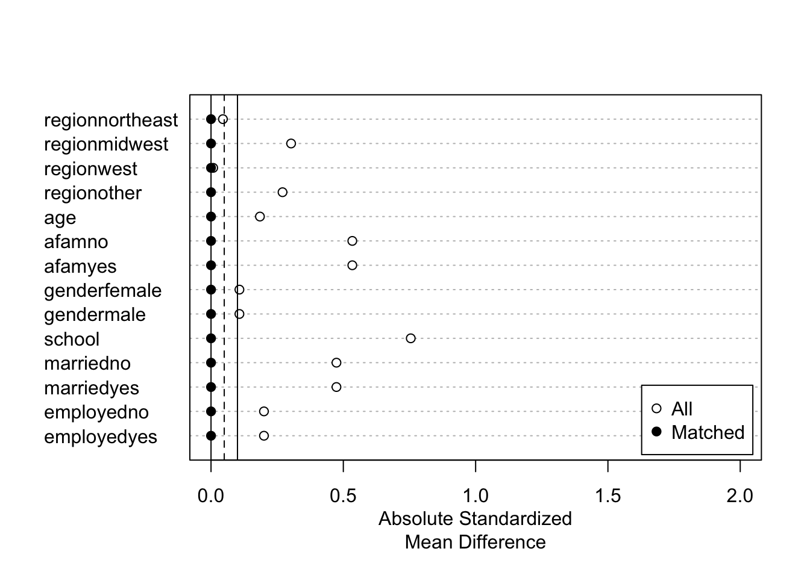
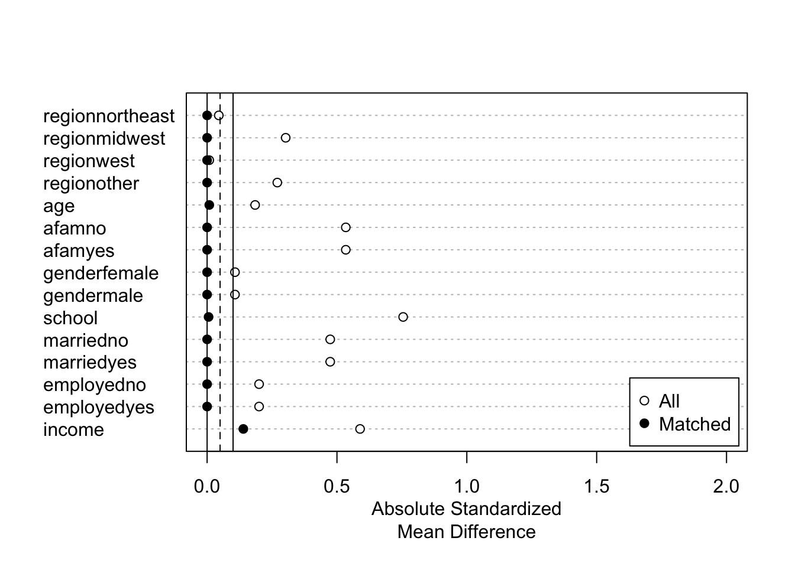
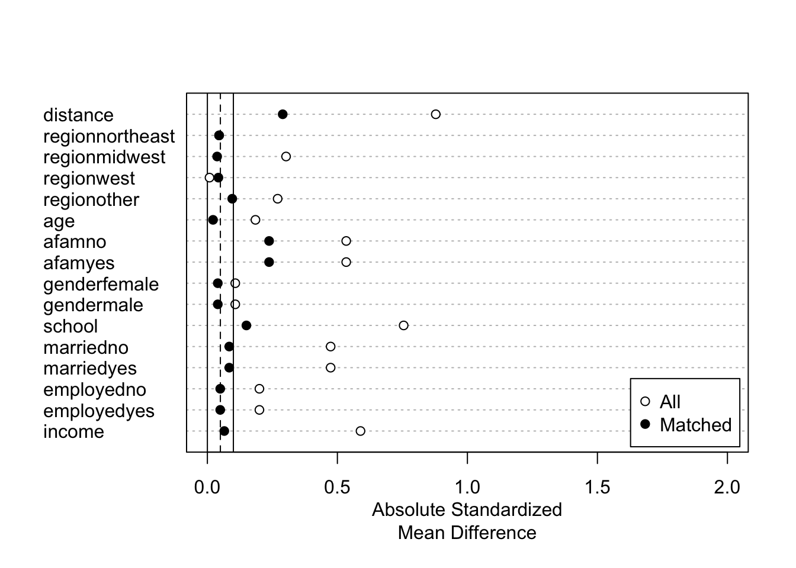
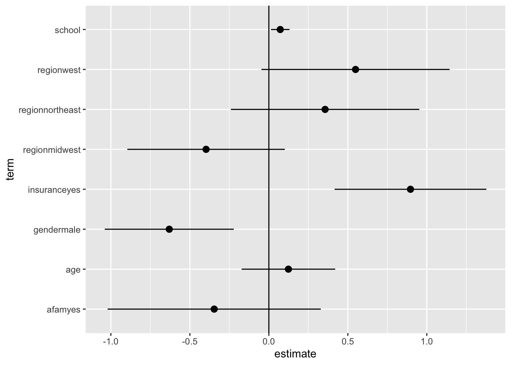
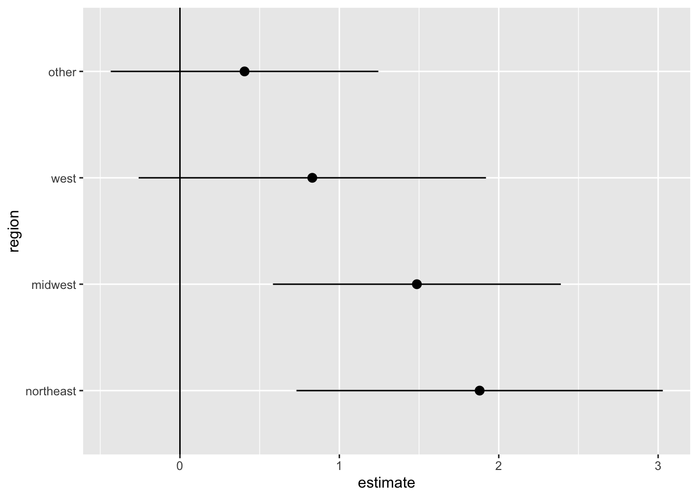

library(tidyverse)
library(AER)
library(estimatr)
library(MatchIt)
data("NMES1988")
raw <- na.omit(NMES1988)2 線形モデルの推定
関心のあるパラメータ\(\tau(X)=E[Y|d,X]-E[Y|d',X]\)を埋め込んだ線形モデルを推定する。
- 典型的には、\(E[Y|D,X]\)を線形近似し、推定する。
\[E[Y|D=d,X=x]=\underbrace{\tau}_{Interest\ parameter}\times d+\underbrace{f(x)}_{Nuisance\ function}\]
\(f(X)=\beta_0 + \beta_1 X_1 + ...+\beta_LX_L\)
\(\tau\)について点推定だけでなく、信頼区間も推定する。
前処理なしに線形モデルを推定し、信頼区間を計算する方法を紹介
近似モデルの定式化への依存度を下げるために、マッチング法を用いた前処理を導入
推定結果の表によるまとめ、可視化、および複数の推定結果を効率的に保存する方法を紹介
2.1 パッケージ & データ
2.2 線形モデルの推定
\(\tau(x)=\tau,f(x)=\beta_0+\beta_1x_1+...+\beta_Lx_L\)と特定化
サンプル内MSEを最大化するように推定
robust standard errorを計算するためにestimatrパッケージ(R-estimatr?)を利用
lm_robust関数で推定
lm_robust(visits ~ insurance + region + age + afam + gender + school + income + employed + married,
data = raw) Estimate Std. Error t value Pr(>|t|) CI Lower
(Intercept) 4.32086605 1.30928537 3.3001713 9.739642e-04 1.75400683
insuranceyes 0.96591490 0.24785140 3.8971533 9.877947e-05 0.48000123
regionnortheast 0.34814737 0.30392728 1.1454957 2.520663e-01 -0.24770327
regionmidwest -0.40583622 0.25526934 -1.5898354 1.119439e-01 -0.90629278
regionwest 0.57163030 0.30418463 1.8792215 6.028038e-02 -0.02472489
age 0.04293421 0.15977094 0.2687235 7.881551e-01 -0.27029737
afamyes -0.39294341 0.34701206 -1.1323624 2.575439e-01 -1.07326195
gendermale -0.46726544 0.22050124 -2.1191057 3.413748e-02 -0.89955902
school 0.08475793 0.03108035 2.7270588 6.415540e-03 0.02382479
income -0.04678801 0.03712934 -1.2601357 2.076873e-01 -0.11958023
employedyes -0.34186375 0.42407955 -0.8061312 4.202108e-01 -1.17327342
marriedyes -0.29559842 0.23244624 -1.2716851 2.035523e-01 -0.75131020
CI Upper DF
(Intercept) 6.88772528 4394
insuranceyes 1.45182856 4394
regionnortheast 0.94399802 4394
regionmidwest 0.09462034 4394
regionwest 1.16798549 4394
age 0.35616578 4394
afamyes 0.28737512 4394
gendermale -0.03497187 4394
school 0.14569108 4394
income 0.02600421 4394
employedyes 0.48954591 4394
marriedyes 0.16011336 4394線形モデルによる推定は、いくつかの問題がある
異なるグループ間で、\(X\)の分布が異なる場合、回帰式の定式化に強く依存する
一般に平均効果ではなく、加重平均が推計される
サンプルサイズに比べて、少数のコントロール変数を導入できない
以下ではマッチング法、機械学手法を用いた頑強な推定を目指す
2.2.1 RCTデータへの応用
原因変数が完全にランダム化されている場合、因果効果の識別を目的に回帰分析を応用する必要はない
因果効果の推定の改善、効率性向上、を目的として線形モデルの利用は議論されてきた。(freedman2008regressiona?; freedman2008regressionb?)
(lin2013agnostic?)は、以下のような交差項を導入したモデルを用いることで、平均の差の推定に比べて、漸近的効率性が悪化することはない（同等か改善する）ことを示した
\[E[Y|D,X]=\beta_{D}\times D+\beta_1\times X_1+...+\beta_L\times X_L\]
\[+\underbrace{\beta_{1D}\times D\times X_1+...+\beta_{LD}\times D\times X_L}_{交差項}\]
2.3 マッチング法による修正
回帰を行う事前準備としてマッチング法を利用する
重回帰が持つ関数形への依存度を減らせる (ho2007matching?)
MathItパッケージ (MatchIt2011?)を利用
多数のマッチング法が実装されている
2.3.1 Exact matching
\(X\)が完全に同じサンプル同士をマッチングする
原因変数の分布に偏りがある場合（本例ではコントロールグループが少ない）、少ないグループ内での平均効果(Average treatment effect for treat または control)の推定を目指すことでマッチできないサンプルを減らすことが期待できる。
fit.m <- matchit(insurance ~ region + age + afam + gender + school+ married + employed,
data = raw,
method = "exact",
estimand = "ATC"
)この例では、incomeもコントロール変数に加えた場合、Exact matching不可能（一つもマッチングできない）
マッチング結果の表示
summary(fit.m)
Call:
matchit(formula = insurance ~ region + age + afam + gender +
school + married + employed, data = raw, method = "exact",
estimand = "ATC")
Summary of Balance for All Data:
Means Treated Means Control Std. Mean Diff. Var. Ratio
regionnortheast 0.1938 0.1766 0.0450 .
regionmidwest 0.2882 0.1736 0.3026 .
regionwest 0.1818 0.1787 0.0082 .
regionother 0.3362 0.4711 -0.2703 .
age 7.3737 7.5021 -0.1849 0.7752
afamno 0.9380 0.6914 0.5340 .
afamyes 0.0620 0.3086 -0.5340 .
genderfemale 0.5849 0.6365 -0.1073 .
gendermale 0.4151 0.3635 0.1073 .
school 10.9547 7.9827 0.7549 0.7464
marriedno 0.4028 0.6315 -0.4740 .
marriedyes 0.5972 0.3685 0.4740 .
employedno 0.8857 0.9350 -0.2001 .
employedyes 0.1143 0.0650 0.2001 .
eCDF Mean eCDF Max
regionnortheast 0.0172 0.0172
regionmidwest 0.1146 0.1146
regionwest 0.0031 0.0031
regionother 0.1349 0.1349
age 0.0357 0.0936
afamno 0.2467 0.2467
afamyes 0.2467 0.2467
genderfemale 0.0516 0.0516
gendermale 0.0516 0.0516
school 0.1564 0.3248
marriedno 0.2287 0.2287
marriedyes 0.2287 0.2287
employedno 0.0493 0.0493
employedyes 0.0493 0.0493
Summary of Balance for Matched Data:
Means Treated Means Control Std. Mean Diff. Var. Ratio
regionnortheast 0.2107 0.2107 0 .
regionmidwest 0.2201 0.2201 0 .
regionwest 0.1384 0.1384 0 .
regionother 0.4308 0.4308 0 .
age 7.3296 7.3296 0 0.9998
afamno 0.9434 0.9434 0 .
afamyes 0.0566 0.0566 0 .
genderfemale 0.6887 0.6887 0 .
gendermale 0.3113 0.3113 0 .
school 9.9277 9.9277 0 0.9998
marriedno 0.5283 0.5283 0 .
marriedyes 0.4717 0.4717 0 .
employedno 0.9560 0.9560 0 .
employedyes 0.0440 0.0440 0 .
eCDF Mean eCDF Max Std. Pair Dist.
regionnortheast 0 0 0
regionmidwest 0 0 0
regionwest 0 0 0
regionother 0 0 0
age 0 0 0
afamno 0 0 0
afamyes 0 0 0
genderfemale 0 0 0
gendermale 0 0 0
school 0 0 0
marriedno 0 0 0
marriedyes 0 0 0
employedno 0 0 0
employedyes 0 0 0
Sample Sizes:
Control Treated
All 985 3421.
Matched (ESS) 318 338.39
Matched 318 624.
Unmatched 667 2797.
Discarded 0 0. Sample sizesにて、マッチングできなかったサンプル数（985のコントロールグループ中、667サンプルがマッチングできなかった）が確認できる
マッチング結果の図示
fit.m |>
summary() |>
plot(xlim = c(0,2))
- マッチング結果を変数として含んだデータを作成
df <- match.data(fit.m)“subclass”: マッチングしたグループ
“weights”：マッチング後の推計に用いるウェイト
マッチングしたデータを用いた推定
- 新たに作成されるweight (defaltではweights)を用いた、加重推定で実装
lm_robust(visits ~ insurance,
df,
weights = weights) Estimate Std. Error t value Pr(>|t|) CI Lower CI Upper DF
(Intercept) 4.707547 0.2978972 15.802589 4.605531e-50 4.1229266 5.292168 940
insuranceyes 1.481104 0.4842812 3.058355 2.288589e-03 0.5307064 2.431501 9402.3.2 Coarsened exact matching
Coarsened exact matching(iacus2012causal?)の実装
- 連続変数をカテゴリー変数化することで、マッチングできるサンプルサイズを増やすことが期待できる
fit.m <- matchit(insurance ~ region + age + afam + gender + school+ married + employed + income,
data = raw,
method = "cem",
estimand = "ATC")- マッチング結果
summary(fit.m)
Call:
matchit(formula = insurance ~ region + age + afam + gender +
school + married + employed + income, data = raw, method = "cem",
estimand = "ATC")
Summary of Balance for All Data:
Means Treated Means Control Std. Mean Diff. Var. Ratio
regionnortheast 0.1938 0.1766 0.0450 .
regionmidwest 0.2882 0.1736 0.3026 .
regionwest 0.1818 0.1787 0.0082 .
regionother 0.3362 0.4711 -0.2703 .
age 7.3737 7.5021 -0.1849 0.7752
afamno 0.9380 0.6914 0.5340 .
afamyes 0.0620 0.3086 -0.5340 .
genderfemale 0.5849 0.6365 -0.1073 .
gendermale 0.4151 0.3635 0.1073 .
school 10.9547 7.9827 0.7549 0.7464
marriedno 0.4028 0.6315 -0.4740 .
marriedyes 0.5972 0.3685 0.4740 .
employedno 0.8857 0.9350 -0.2001 .
employedyes 0.1143 0.0650 0.2001 .
income 2.7759 1.6630 0.5889 2.7193
eCDF Mean eCDF Max
regionnortheast 0.0172 0.0172
regionmidwest 0.1146 0.1146
regionwest 0.0031 0.0031
regionother 0.1349 0.1349
age 0.0357 0.0936
afamno 0.2467 0.2467
afamyes 0.2467 0.2467
genderfemale 0.0516 0.0516
gendermale 0.0516 0.0516
school 0.1564 0.3248
marriedno 0.2287 0.2287
marriedyes 0.2287 0.2287
employedno 0.0493 0.0493
employedyes 0.0493 0.0493
income 0.1920 0.3244
Summary of Balance for Matched Data:
Means Treated Means Control Std. Mean Diff. Var. Ratio
regionnortheast 0.1663 0.1663 -0.0000 .
regionmidwest 0.2026 0.2026 -0.0000 .
regionwest 0.1471 0.1471 -0.0000 .
regionother 0.4840 0.4840 -0.0000 .
age 7.3175 7.3117 0.0084 0.9786
afamno 0.8486 0.8486 0.0000 .
afamyes 0.1514 0.1514 -0.0000 .
genderfemale 0.6652 0.6652 -0.0000 .
gendermale 0.3348 0.3348 -0.0000 .
school 9.2821 9.2601 0.0056 0.9798
marriedno 0.5458 0.5458 -0.0000 .
marriedyes 0.4542 0.4542 -0.0000 .
employedno 0.9659 0.9659 0.0000 .
employedyes 0.0341 0.0341 -0.0000 .
income 1.6947 1.4311 0.1395 0.9181
eCDF Mean eCDF Max Std. Pair Dist.
regionnortheast 0.0000 0.0000 0.0000
regionmidwest 0.0000 0.0000 0.0000
regionwest 0.0000 0.0000 0.0000
regionother 0.0000 0.0000 0.0000
age 0.0040 0.0237 0.1533
afamno 0.0000 0.0000 0.0000
afamyes 0.0000 0.0000 0.0000
genderfemale 0.0000 0.0000 0.0000
gendermale 0.0000 0.0000 0.0000
school 0.0018 0.0158 0.0211
marriedno 0.0000 0.0000 0.0000
marriedyes 0.0000 0.0000 0.0000
employedno 0.0000 0.0000 0.0000
employedyes 0.0000 0.0000 0.0000
income 0.0845 0.1898 0.3971
Sample Sizes:
Control Treated
All 985 3421.
Matched (ESS) 469 438.65
Matched 469 1196.
Unmatched 516 2225.
Discarded 0 0. - 可視化
fit.m |>
summary() |>
plot(xlim = c(0,2))
Exact matching以外のマッチング法では、マッチングされたサンプル内でも\(X\)の違いが残る
- マッチングされたサンプル内で回帰分析を行うことで、再調整する
df <- match.data(fit.m)
lm_robust(visits ~ insurance + region + age + afam + gender + school+ married + employed + income,
df,
weights = weights) Estimate Std. Error t value Pr(>|t|) CI Lower
(Intercept) 0.07031894 3.1830746 0.02209152 9.823776e-01 -6.17296408
insuranceyes 1.63803136 0.4111893 3.98364310 7.081498e-05 0.83152463
regionnortheast 0.37332676 0.6686084 0.55836385 5.766716e-01 -0.93808186
regionmidwest -1.01255860 0.4957411 -2.04251498 4.125884e-02 -1.98490525
regionwest 1.46720871 0.9811751 1.49535874 1.350117e-01 -0.45726821
age 0.54604701 0.4139224 1.31920151 1.872845e-01 -0.26582038
afamyes -1.09566719 0.8327555 -1.31571289 1.884529e-01 -2.72903401
gendermale -0.77640463 0.5006594 -1.55076411 1.211496e-01 -1.75839805
school 0.16064654 0.1041628 1.54226418 1.232008e-01 -0.04365837
marriedyes -0.16566757 0.5419170 -0.30570652 7.598666e-01 -1.22858372
employedyes -1.47819362 1.1718433 -1.26142599 2.073334e-01 -3.77664729
income -0.36310301 0.1778814 -2.04126501 4.138301e-02 -0.71199956
CI Upper DF
(Intercept) 6.31360197 1653
insuranceyes 2.44453809 1653
regionnortheast 1.68473538 1653
regionmidwest -0.04021195 1653
regionwest 3.39168562 1653
age 1.35791440 1653
afamyes 0.53769963 1653
gendermale 0.20558879 1653
school 0.36495144 1653
marriedyes 0.89724858 1653
employedyes 0.82026004 1653
income -0.01420647 16532.3.3 Propensity score with subclassification
Coarsened exact matchingでもマッチングできないサンプルが多数出てくる可能性
- とくに\(X\)が大量にある場合
1次元の距離指標を用いて、マッチングを行う
- 距離指標としては、Mahalanobis’ Distance、Propensity scoreなど
ここではPropensity score \(p_d(X)\)を用いる
\[p_d(X)\equiv \Pr[D=d|X]\]
属性\(X\)のユニットの中で、原因変数の値が\(d\)である人の割合
未知の場合、データから推定する必要がある
推定された傾向スコアを用いたStratification マッチング
- ロジットにて傾向スコアを推定
fit.m <- matchit(insurance ~ region + age + afam + gender + school+ married + employed + income,
data = raw,
method = "subclass",
estimand = "ATC"
)- マッチング結果
summary(fit.m)
Call:
matchit(formula = insurance ~ region + age + afam + gender +
school + married + employed + income, data = raw, method = "subclass",
estimand = "ATC")
Summary of Balance for All Data:
Means Treated Means Control Std. Mean Diff. Var. Ratio
distance 0.8230 0.6148 0.8783 0.3568
regionnortheast 0.1938 0.1766 0.0450 .
regionmidwest 0.2882 0.1736 0.3026 .
regionwest 0.1818 0.1787 0.0082 .
regionother 0.3362 0.4711 -0.2703 .
age 7.3737 7.5021 -0.1849 0.7752
afamno 0.9380 0.6914 0.5340 .
afamyes 0.0620 0.3086 -0.5340 .
genderfemale 0.5849 0.6365 -0.1073 .
gendermale 0.4151 0.3635 0.1073 .
school 10.9547 7.9827 0.7549 0.7464
marriedno 0.4028 0.6315 -0.4740 .
marriedyes 0.5972 0.3685 0.4740 .
employedno 0.8857 0.9350 -0.2001 .
employedyes 0.1143 0.0650 0.2001 .
income 2.7759 1.6630 0.5889 2.7193
eCDF Mean eCDF Max
distance 0.2750 0.4285
regionnortheast 0.0172 0.0172
regionmidwest 0.1146 0.1146
regionwest 0.0031 0.0031
regionother 0.1349 0.1349
age 0.0357 0.0936
afamno 0.2467 0.2467
afamyes 0.2467 0.2467
genderfemale 0.0516 0.0516
gendermale 0.0516 0.0516
school 0.1564 0.3248
marriedno 0.2287 0.2287
marriedyes 0.2287 0.2287
employedno 0.0493 0.0493
employedyes 0.0493 0.0493
income 0.1920 0.3244
Summary of Balance Across Subclasses
Means Treated Means Control Std. Mean Diff. Var. Ratio
distance 0.6264 0.6148 0.0486 0.9752
regionnortheast 0.1752 0.1766 -0.0039 .
regionmidwest 0.1941 0.1736 0.0542 .
regionwest 0.1915 0.1787 0.0335 .
regionother 0.4392 0.4711 -0.0638 .
age 7.4961 7.5021 -0.0087 0.8894
afamno 0.6956 0.6914 0.0092 .
afamyes 0.3044 0.3086 -0.0092 .
genderfemale 0.5977 0.6365 -0.0807 .
gendermale 0.4023 0.3635 0.0807 .
school 8.0956 7.9827 0.0287 1.0967
marriedno 0.6000 0.6315 -0.0653 .
marriedyes 0.4000 0.3685 0.0653 .
employedno 0.9157 0.9350 -0.0782 .
employedyes 0.0843 0.0650 0.0782 .
income 1.9086 1.6630 0.1300 1.3758
eCDF Mean eCDF Max
distance 0.0133 0.0457
regionnortheast 0.0015 0.0015
regionmidwest 0.0205 0.0205
regionwest 0.0128 0.0128
regionother 0.0319 0.0319
age 0.0133 0.0339
afamno 0.0042 0.0042
afamyes 0.0042 0.0042
genderfemale 0.0388 0.0388
gendermale 0.0388 0.0388
school 0.0109 0.0311
marriedno 0.0315 0.0315
marriedyes 0.0315 0.0315
employedno 0.0193 0.0193
employedyes 0.0193 0.0193
income 0.0622 0.1485
Sample Sizes:
Control Treated
All 985 3421.
Matched (ESS) 985 999.44
Matched 985 3421.
Unmatched 0 0.
Discarded 0 0. - マッチング結果の図示
fit.m |>
summary() |>
plot(xlim = c(0,2))
- マッチングしたデータを用いた推定
df <- match.data(fit.m) # マッチング結果を含んだ
lm_robust(visits ~ insurance + region + age + afam + gender + school+ married + employed,
df,
weights = weights) Estimate Std. Error t value Pr(>|t|) CI Lower
(Intercept) 2.69483196 1.56827266 1.7183440 0.085804312 -0.37977270
insuranceyes 0.86429413 0.30326930 2.8499229 0.004393338 0.26973348
regionnortheast 0.32880379 0.47161144 0.6971921 0.485719430 -0.59579228
regionmidwest -0.72444843 0.38788012 -1.8677122 0.061868702 -1.48488891
regionwest 0.36858393 0.43102618 0.8551312 0.392525130 -0.47644456
age 0.32472400 0.19637511 1.6535904 0.098282174 -0.06027016
afamyes -0.73188348 0.46736086 -1.5659923 0.117422424 -1.64814626
gendermale -1.02017368 0.34142463 -2.9879909 0.002823707 -1.68953801
school 0.05542150 0.04126024 1.3432182 0.179270695 -0.02546936
marriedyes -0.07195191 0.30991060 -0.2321699 0.816416863 -0.67953285
employedyes -0.54902900 0.45865317 -1.1970461 0.231353145 -1.44822033
CI Upper DF
(Intercept) 5.76943662 4395
insuranceyes 1.45885478 4395
regionnortheast 1.25339987 4395
regionmidwest 0.03599205 4395
regionwest 1.21361243 4395
age 0.70971816 4395
afamyes 0.18437930 4395
gendermale -0.35080936 4395
school 0.13631236 4395
marriedyes 0.53562902 4395
employedyes 0.35016234 43952.3.4 Nearest neighbor matching
傾向スコアを用いた最近旁マッチング
傾向スコアがもっとも似ているサンプルとマッチングする
デフォルトでは、Replacement無しのマッチングを行う
fit.m <- matchit(insurance ~ region + age + afam + gender + school+ married + employed + income,
data = raw,
method = "nearest",
estimand = "ATC"
)- マッチング結果
summary(fit.m)
Call:
matchit(formula = insurance ~ region + age + afam + gender +
school + married + employed + income, data = raw, method = "nearest",
estimand = "ATC")
Summary of Balance for All Data:
Means Treated Means Control Std. Mean Diff. Var. Ratio
distance 0.8230 0.6148 0.8783 0.3568
regionnortheast 0.1938 0.1766 0.0450 .
regionmidwest 0.2882 0.1736 0.3026 .
regionwest 0.1818 0.1787 0.0082 .
regionother 0.3362 0.4711 -0.2703 .
age 7.3737 7.5021 -0.1849 0.7752
afamno 0.9380 0.6914 0.5340 .
afamyes 0.0620 0.3086 -0.5340 .
genderfemale 0.5849 0.6365 -0.1073 .
gendermale 0.4151 0.3635 0.1073 .
school 10.9547 7.9827 0.7549 0.7464
marriedno 0.4028 0.6315 -0.4740 .
marriedyes 0.5972 0.3685 0.4740 .
employedno 0.8857 0.9350 -0.2001 .
employedyes 0.1143 0.0650 0.2001 .
income 2.7759 1.6630 0.5889 2.7193
eCDF Mean eCDF Max
distance 0.2750 0.4285
regionnortheast 0.0172 0.0172
regionmidwest 0.1146 0.1146
regionwest 0.0031 0.0031
regionother 0.1349 0.1349
age 0.0357 0.0936
afamno 0.2467 0.2467
afamyes 0.2467 0.2467
genderfemale 0.0516 0.0516
gendermale 0.0516 0.0516
school 0.1564 0.3248
marriedno 0.2287 0.2287
marriedyes 0.2287 0.2287
employedno 0.0493 0.0493
employedyes 0.0493 0.0493
income 0.1920 0.3244
Summary of Balance for Matched Data:
Means Treated Means Control Std. Mean Diff. Var. Ratio
distance 0.6835 0.6148 0.2897 0.5687
regionnortheast 0.1939 0.1766 0.0453 .
regionmidwest 0.1878 0.1736 0.0375 .
regionwest 0.1949 0.1787 0.0424 .
regionother 0.4234 0.4711 -0.0956 .
age 7.4870 7.5021 -0.0218 0.8702
afamno 0.8010 0.6914 0.2374 .
afamyes 0.1990 0.3086 -0.2374 .
genderfemale 0.6173 0.6365 -0.0401 .
gendermale 0.3827 0.3635 0.0401 .
school 8.5736 7.9827 0.1501 0.8404
marriedno 0.5909 0.6315 -0.0842 .
marriedyes 0.4091 0.3685 0.0842 .
employedno 0.9228 0.9350 -0.0494 .
employedyes 0.0772 0.0650 0.0494 .
income 1.7858 1.6630 0.0650 0.7674
eCDF Mean eCDF Max Std. Pair Dist.
distance 0.0309 0.1827 0.2898
regionnortheast 0.0173 0.0173 0.7800
regionmidwest 0.0142 0.0142 0.7130
regionwest 0.0162 0.0162 0.7897
regionother 0.0477 0.0477 0.9173
age 0.0133 0.0365 1.0470
afamno 0.1096 0.1096 0.4879
afamyes 0.1096 0.1096 0.4879
genderfemale 0.0193 0.0193 0.9224
gendermale 0.0193 0.0193 0.9224
school 0.0318 0.0924 0.7555
marriedno 0.0406 0.0406 0.8292
marriedyes 0.0406 0.0406 0.8292
employedno 0.0122 0.0122 0.5437
employedyes 0.0122 0.0122 0.5437
income 0.0615 0.1472 0.7354
Sample Sizes:
Control Treated
All 985 3421
Matched 985 985
Unmatched 0 2436
Discarded 0 0- マッチング結果の図示
fit.m |>
summary() |>
plot(xlim = c(0,2))
マッチングしたデータを用いた推定
- replacement無しの場合ｍマッチングしたペア(subclass)でクラスタリングしたrobust standard errorの利用を推奨 (abadie2021robust?)
df <- match.data(fit.m) # マッチング結果を含んだ
lm_robust(visits ~ insurance + region + age + afam + gender + school+ married + employed + income,
df,
clusters = subclass,
weights = weights) Estimate Std. Error t value Pr(>|t|) CI Lower
(Intercept) 4.28376769 1.80365512 2.3750481 0.0179117218 0.74034506
insuranceyes 0.88089215 0.27930681 3.1538513 0.0016606844 0.33277940
regionnortheast 0.11745650 0.43169716 0.2720808 0.7856724490 -0.73071167
regionmidwest -1.09402106 0.34563753 -3.1652265 0.0016483956 -1.77317575
regionwest 0.67689981 0.41977554 1.6125280 0.1074679565 -0.14780947
age 0.15738399 0.21874416 0.7194889 0.4721765473 -0.27238904
afamyes -0.65822959 0.31824549 -2.0683077 0.0391049262 -1.28343451
gendermale -1.12983896 0.30900225 -3.6564101 0.0002772051 -1.73664207
school 0.04179621 0.03992562 1.0468521 0.2957240492 -0.03666544
marriedyes 0.26953526 0.28939461 0.9313762 0.3520209096 -0.29877535
employedyes -0.28682948 0.69900943 -0.4103371 0.6821000780 -1.66715900
income -0.18287346 0.07454076 -2.4533350 0.0158456243 -0.33072080
CI Upper DF
(Intercept) 7.82719031 515.2437
insuranceyes 1.42900489 973.5096
regionnortheast 0.96562467 498.9836
regionmidwest -0.41486638 478.5757
regionwest 1.50160909 508.1414
age 0.58715703 499.0168
afamyes -0.03302466 519.9827
gendermale -0.52303586 627.8155
school 0.12025787 454.6173
marriedyes 0.83784587 621.0176
employedyes 1.09350005 162.2410
income -0.03502611 102.22462.4 付録：推定結果の保存と表示
2.4.1 推計結果表
tidy関数により推定結果data.frameに変化することで、kable関数(knitrパッケージ)による推計結果表の整形、geom_pointrange関数による可視化が可能
点推定値(estimate)、標準誤差(std.error)のみを残した推計結果表
library(knitr)
lm_robust(visits ~ insurance + region + age + afam + gender + school,
data = raw
) |>
tidy() |>
select(term, estimate, std.error) |>
kable(digits = 2)| term | estimate | std.error |
|---|---|---|
| (Intercept) | 3.65 | 1.23 |
| insuranceyes | 0.90 | 0.25 |
| regionnortheast | 0.36 | 0.30 |
| regionmidwest | -0.40 | 0.25 |
| regionwest | 0.55 | 0.30 |
| age | 0.12 | 0.15 |
| afamyes | -0.35 | 0.34 |
| gendermale | -0.63 | 0.21 |
| school | 0.07 | 0.03 |
lm_robust(visits ~ insurance + region + age + afam + gender + school,
data = raw
) |>
tidy() |>
select(term, estimate, std.error) |>
filter(term == "insuranceyes") |>
kable(digits = 2)| term | estimate | std.error |
|---|---|---|
| insuranceyes | 0.9 | 0.25 |
2.4.2 Dot-and-Whisker plotによる可視化
- Dot-and-Whisker図により点推定量と信頼区間を可視化
lm_robust(visits ~ insurance + region + age + afam + gender + school,
data = raw) |>
tidy() |>
filter(term != "(Intercept)"
) |>
ggplot(aes(y = term,
x = estimate,
xmin = conf.low,
xmax = conf.high)
) +
geom_pointrange() +
geom_vline(xintercept = 0)
2.4.3 サブサンプル分析結果の整理と可視化
条件付き平均効果\(=E[Y_i(d)-Y_i(d')|X_i=x]\)
因果効果の異質性を議論する上で、有力な要約値
少数の\(x\)を分析者が事前設定する場合、\(x\)についてサブサンプルを作成し、推定すればOK
tidyverseパッケージに含まれるnest/unnest関数を用いれば、整理したサブサンプル分析が可能でかつ、容易に可視化/表化できる
推定結果を入子リスト形式に保存し、通常のデータフレーム形式に展開、可視化/表化する手順踏む
関数をリストの構成要素に逐次適用する汎関数(map)を利用することで、同じデータフレーム内に結果を保存できる
以下では”region”ごとに条件付き平均効果を推定する
regression <-
function(df){
lm_robust(visits ~ insurance + age + afam + gender + school + income + employed + married,
data = df) |>
tidy() |>
filter(term == "insuranceyes")
} # 推計し、関心のあるパラメータのみからなるデータフレーム化する関数
result <-
raw |>
group_by(region) |> # regoinごとにサブグループ化
nest() |> # regionごとに入子データを作成
mutate(model = map(data,regression)) |> # 推定し、モデルとして結果をほぞpン
unnest() |> # 入子構造を解消
distinct(region,
estimate,
conf.low,
conf.high) # regionごとの結果表を作成- データフレームなので、容易に可視化できる
result |>
ggplot(aes(x = estimate,
y = region,
xmin = conf.low,
xmax = conf.high)
) +
geom_pointrange() +
geom_vline(xintercept = 0)
2.4.4 複数の推定結果の整理と可視化
- listで保存し、data.frameに展開、という手順はより一般に複数の推定結果を整理することに使える
list <- list() # 空のリストを作成
list[[1]] <-
lm_robust(visits ~ insurance + age + afam + gender + school + income + employed + married +region,
data = raw) |>
tidy() |>
filter(term == "insuranceyes") # 推定結果をリストに保存
list[[2]] <-
lm_robust(nvisits ~ insurance + age + afam + gender + school + income + employed + married +region,
data = raw) |>
tidy() |>
filter(term == "insuranceyes") # 別の結果を保存
names(list) <- c("visits","nvisits") # 名づけ
result <-
enframe(list) |>
unnest() # データフレーム化
result |>
ggplot(aes(y = name,
x = estimate,
xmin = conf.low,
xmax = conf.high
)
) +
geom_pointrange() # 可視化